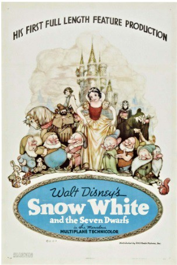
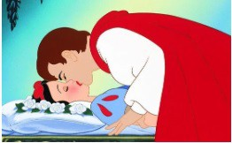

על הסרט
"שלגיה ושבעת הגמדים" הוא סרט האנימציה הראשון באורך מלא בהיסטוריית הקולנוע, הראשון שהופק בצבע מלא, והראשון של חברת וולט דיסני. הוא יצא לאקרנים ב-1937 ומבוסס על האגדה הגרמנית של האחים גרים.
שנה: 1937 אורך: 83 דקות חברה: וולט דיסני סוגה: פנטזיה מוזיקלית במאי: דייוויד הנד
הסיפור האמיתי (והמצמרר)
הסיפור המקורי של שלגיה, הרבה יותר מצמרר ממה שאתם זוכרים. גם בגרסה המקורית האם החורגת של שלגיה שולחת אותה ליער ומבקשת שיהרגו אותה, אך בשונה מהסרט של דיסני היא מבקשת שיביאו לה את הלב והכבד שלה כהוכחה להריגה והיא גם אוכלת אותם בהנאה. בהמשך כשהיא מביאה לשלגיה את התפוח בפעם השלישית, שלגיה מתעלפת ומניחים אותה בארון קבורה מזכוכית. כשהנסיך מוצא אותה ומבקש שייקחו אותה אליו בארון, הגמדים סוחבים אותה ובגלל שהם מועדים התפוח המורעל נפלט מהגרון של שלגיה והיא חוזרת לחיים עם הנסיך אהובה. האם החורגת המרשעת מוזמנת לחתונה של שלגיה והנסיך וכעונש להתנהגות שלה מכריחים אותה לרקוד עם נעליים בוערות באש עד למותה. נשמע קצת שונה מהסיפור שגדלנו עליו…

בסרט שהופק על ידי דיסני שלגיה היא נסיכה בת 14 שחיה עם אימה החורגת בארמון. למלכה יש ראי קסמים שתמיד אומר לה שהיא הכי יפה בממלכה. יום אחד ראי הקסמים מודיע למלכה כי עכשיו שלגיה היא הכי יפה בממלכה. המלכה הקנאית ציוותה על הצייד לקחת את שלגיה ליער ולהרוג אותה וךחזור עם ליבה של שלגיה בקופסת תכשיטים כהוכחה למעשה. הצייד נפגש עם שלגיה אבל לא היה מסוגל לפגוע בה.
מהר מאוד מתברר שהבית שייך לשבעה גמדים מבוגרים: דוק, רטנוני, עליזי, ישנוני, ביישני, אפצ'י, ושטיא, העובדים במכרה סמוך. בעודם חוזרים הביתה, הם מופתעים למצוא את הבקתה שלהם נקיה ומשערים כי פולש פלש לביתם. הגמדים מוצאים למעלה את שלגיה, ישנה על שלוש מיטות. שלגיה מתעוררת ומוצאת את הגמדים ליד המיטה ומציגה את עצמה, כל הגמדים בסופו של דבר מקבלים אותה אל ביתם.
חדשים של בישול, ניקוי, ושמירה על בית הגמדים כשהם כורים בשביל תכשיטים ובלילה שרים, מנגנים ורוקדים. בינתיים, המלכה מגלה ששלגיה עדיין בחיים שהמראה שוב עונה כי שלגיה היא היפה ביותר בממלכה. המלכה שותה שיקוי שהופך אותה לזקנה מכוערת, ומכינה רעל בשם "תרדמת נצח" וטובלת בו תפוח.
הגמדים חוזרים הביתה ומוצאים את שלגיה מתה לכאורה. הם משכיבים אותה בארון זכוכית מעוטר בזהב בקרחת היער. יחד עם יצורי היער הם משגיחים עליה במשמרות. לאחר זמן מה, נסיך, שפגש פעם את שלגיה והתאהב בה, מגיע למקום. הוא מנשק אותה, שובר את הכישוף ומעיר אותה.
אפיון דמויות
שלגיה (הנסיכה)
שלגיה היא הנסיכה הראשונה של דיסני. שלגיה נסיכה בת 14 (הצעירה ביותר מנסיכות דיסני) צעירה ויפה שנולדה עם עור לבן כשלג, שיער שחור כעורב ושפתיים אדומות כדם. בתחילת הסרט היא לבושה סחבות, אך לאחר מכן לובשת שמלה מלכותית בצבעים כחול, צהוב ואדום.
ייצוג הנשים: למרות החיים הקשים שלה עם אימה החורגת, שלגיה שומרת על התנהגות עליזה אבל נאיבית. היא מתוארת כחביבה, אופטימית, מסודרת ושמחה שרואה את הטוב בכל אחד, היא מאוד אוהבת לשיר ולבלות בחברת בעלי חיים. יחד עם זאת, שלגיה מוצגת כאישה שאחראית על הסדר והניקיון, לא נלחמת על עצמה ותלויה באחרים שיצילו אותה.
התפתחות הדמות: הדמות של שלגיה לא מפתחת לאורך הסרט, רוב העלילה מתרחשת שהיא מחוסרת הכרה. שלגיה לא מגינה על עצמה אלא מגנים עליה. היא פסיבית ומעולפת בזמן שאחרים נלחמים למענה.
המלכה הרעה (גרימהילדה)
שמה של גרימהילדה אינו מוזכר בסרט המקורי. המלכה היא אמה החורגת של שלגיה והנבל העיקרי של הסרט. היא לובשת שמלה שחורה ונושאת עימה שרביט. גרימהילדה מתוארת כאישה שהיופי שלה הוא הדבר החשוב לה ביותר, היא קנאית מאוד ליופי החיצוני שלה. לאחר שהמראה הקסומה שלה אומרת לה ששלגיה היא יפה יותר ממנה, היא מגייסת מיד את הצייד כדי להרוג אותה ביער. לאחר שהיא מגלה כי שלגיה לא מתה, היא מסווה את עצמה כזקנה ומשתמשת בתפוח מורעל.
ניתוח מגדרי וייצוג נשים
- מעמד האישה: הנשים בסרט מוצגות בשני אופנים- מצד אחד המרשעת, המכוערת והחזקה, ומצד שני הטובה, היפה והעדינה שלא עושה שום דבר בשביל להגן על עצמה.
- התנהגות: בביתם של שבעת הגמדים שלגיה היא אחראית על הסדר והניקיון, בלי האישה בבית שתטפל בהם ותנקה את הבית הם מלוכלכים ולא יכולים לדאוג לעצמם.
- תלות באחרים: שלגיה אוכלת מהתפוח המורעל ומתעלפת. לאורך שאר הסרט אנשים אחרים מסביבה מנסים להציל אותה. אמנם שלגיה היא הדמות הראשית, אבל הסרט היא לא מפגינה עצמאות אלא תלויה באחרים. מיד לאחר שהנסיך מעיר אותה היא מתחתנת איתו, בלי להכיר אותו קודם.
- קנאת נשים: הסיפור שלגיה הוא סיפור המונע בידי קנאת נשים מבוססת יופי, שבסופו מגיע נסיך ומציל את המצב.
- הקשר לדמות גבר: לאורך הסיפור שלגיה "ניצלת" ממוות על ידי דמויות גבריות , בהתחלה הצייד שנשלח להרוג אותה מציל אותה, לאחר מכן הגמדים שמאפשרים לה לגור בבית שלהם, ולסיום הנסיך יפה התואר שמעיר אותה בנשיקה.
- עצמאות: בסרט לא לגמרי מרגישים את העצמאות של שלגיה, למרות שהיא עושה מעשה אמיץ ובורחת מאימא החורגת שמנסה להרוגה אל היער היא לא עצמאית, היא פאסיבית ומחכה לנס שיגאל אותה מייסוריה.
הביקורת: מסרים מול איכות
מסרים נוראיים?
יש שיגידו ש"שלגיה ושבעת הגמדים" הוא סרט עם מסרים נוראיים, נסיכה בת 14 שבורחת אל היער כי אימה החורגת שלחה צייד שיהרוג אותה, אימא שמרעילה את הבת שלה, נסיך שמנשק ילדה בת 14 שהיא מחוסרת הכרה אחרי שראה אותה פעם אחת בלבד, ועוד ועוד ועוד.
יחד עם זאת, שלגיה ושבעת הגמדים, גם היום שישים וחמש שנים אחרי, נראה ונשמע מדהים. התפאורות המרשימות של הסרט: היער המכושף, הבית של הגמדים, המעבדה של המכשפה, מצויירים בצורה מדהימה עד הפרט האחרון. גם הדמויות נראות ומונפשות נהדר. כמה נפלא לראות סרט אנימציה מבית דיסני עם דמויות אנושיות ומשכנעות, במקום עיצוב הדמויות של האולפן בעשר ומשהו השנים האחרונות, הנראה כאילו נעשה בידי חולה פרקינסון על טריפים. ומעל הכל המוסיקה, פס הקול בסרט הוא כל כך דומיננטי (וכמו האנימציה, עשוי בשלמות עד לפרט האחרון), עד שנראה כאילו הסרט נעשה כדי ללוות את המוסיקה הקלאסית, ולא להיפך.
אז מה בכל זאת הבעיה? ובכן, לפי דבריו של רז גרינברג, כל אחד מהדברים הנ"ל בנפרד אכן עשוי בשלמות מעוררת הערצה, אבל כולם ביחד מרכיבים סרט ככה-ככה. למה? כי הסיפור של שלגיה, בגרסת דיסני, הוא משהו שאפשר היה לספר ברבע שעה נטו, והסרט באורך של שמונים ושלוש דקות. בנקודה מסוימת, כל אותן התרוצצויות אנרגטיות של הגמדים מתחילות להימאס, ומתחילים לתהות מתי העלילה תתחיל לזוז. נראה לי שגם ילדים שאליהם הסרט הזה היה מיועד מלכתחילה, יתחילו להשתעמם בשלב מסוים. וכשהעלילה סוף-סוף זזה (אם חורגת, ראי-ראי, תפוח, רעל וכו'), כל העסק עובר במהירות הבזק ונגמר מהר מדי.
לדבריו של גינברג "אני מוצא את עצמי ממליץ שוב על סרט בגלל האיכויות הטכניות שלו, למרות אי-אילו גיהוקים בנושא התסריט. אבל שלא תטעו: 'שלגיה ושבעת הגמדים' הוא בהחלט סרט טוב. הוא אמנם בעיקר שיעור היסטוריה, אבל שיעור היסטוריה בכיף".
דילמה לדיון: סטריאוטיפים נשיים בקולנוע
הדילמה של מפיקי סרטים בעידן המודרני:
חברות הפקה כמו דיסני מחזיקות בזכויות על נכסי תרבות קלאסיים ("נכסי צאן ברזל") שעיצבו דורות של ילדים. עם זאת, התכנים הללו משקפים תפיסות מיושנות ולעיתים פוגעניות כלפי נשים (האישה הפסיבית שמחכה להצלה, הנסיך המנשק ללא הסכמה, הקנאה בין נשים על יופי). הדילמה היא כיצד להתייחס ליצירות אלו כיום.
- שימור המורשת התרבותית וההיסטורית של הקולנוע.
- רווח כלכלי (נוסטלגיה מוכרת).
- נאמנות לגרסה המקורית של היוצרים (וולט דיסני).
- המשך הטמעת מסרים שוביניסטיים וסטריאוטיפיים בקרב ילדים.
- ביקורת ציבורית קשה מצד הורים וארגונים פמיניסטיים.
- קיבוע נורמות חברתיות ישנות ומזיקות.
- גילוי אחריות חברתית וחינוכית של גוף תקשורת ענק.
- התאמת התכנים לערכים דמוקרטיים ושוויוניים מודרניים.
- יצירת מודלים לחיקוי חיוביים יותר לבנות ולבנים.
- האשמה ב"צנזורה" או ב"פוליטיקלי קורקט" מוגזם.
- פגיעה בחוויית הצפייה הנוסטלגית.
- עלויות גבוהות בהפקת גרסאות חדשות.